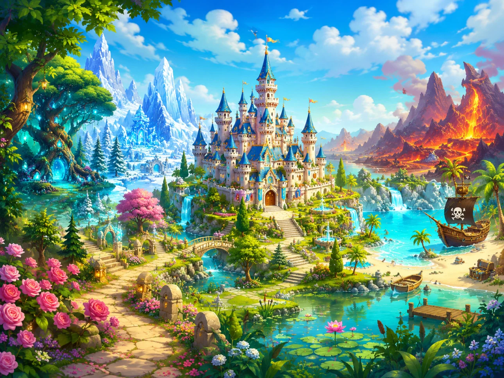
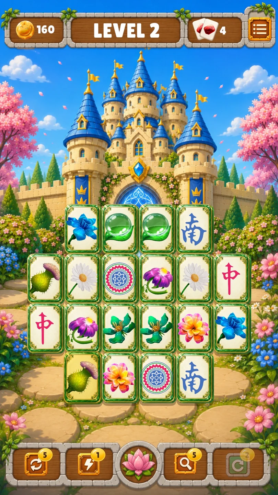
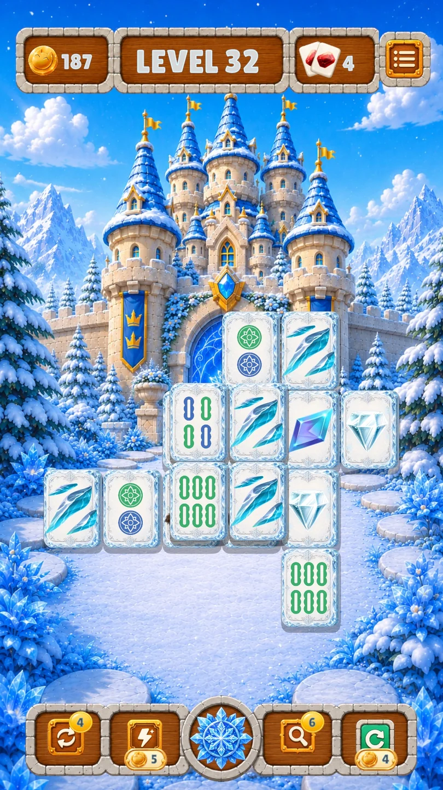
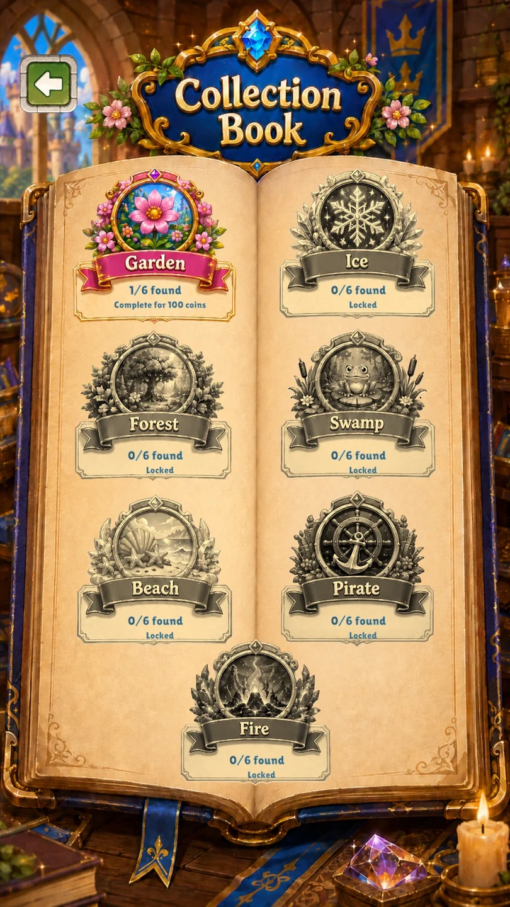
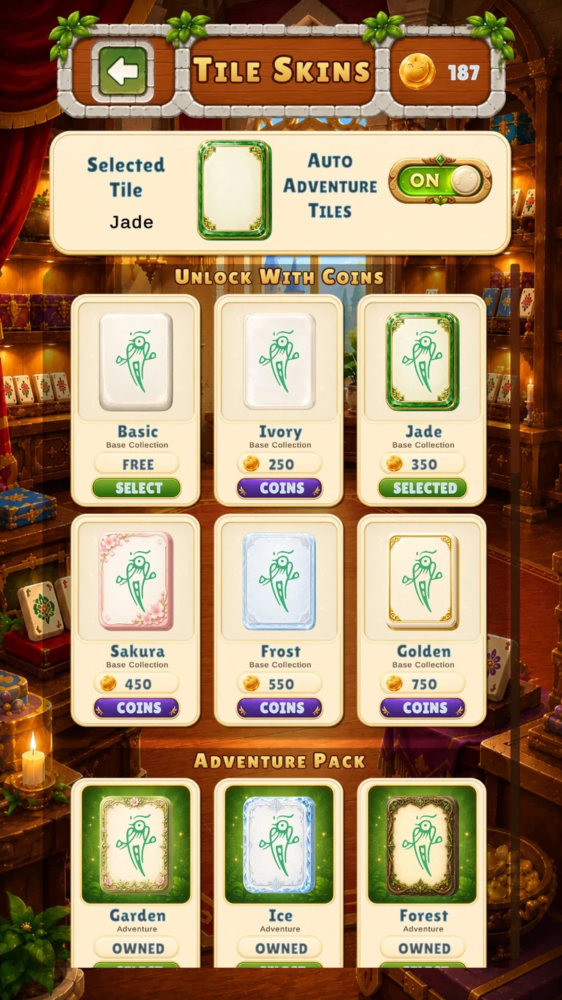

Google Play
Todavía no se muestra una valoración pública.
50+
Ver la ficha y las reseñasPuzzles y lógica · Android
Empareja fichas libres y explora un castillo mágico en 240 niveles y 14 lugares.
Descubre los detalles ↓
La muestra gratuita incluye 30 niveles del jardín y cuatro del hielo. Completa el nivel 30 del jardín para desbloquear diseños Classic ilimitados. Disponible en Android, con Adventure Pack opcional mediante una compra única.




Todavía no se muestra una valoración pública.
50+
Ver la ficha y las reseñasLas valoraciones se muestran por separado para cada tienda y pueden variar según el país y con el tiempo.
Consulta la ficha oficial para conocer disponibilidad, precios e idiomas del juego.